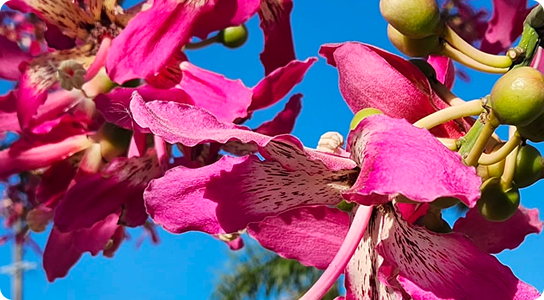
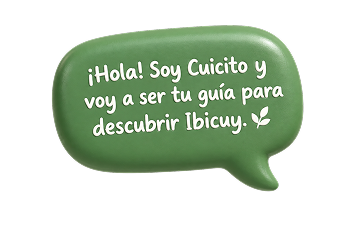
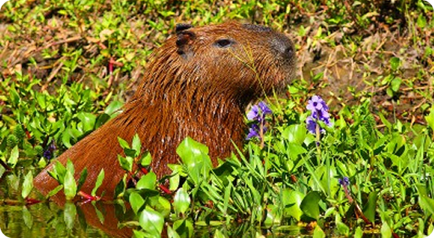
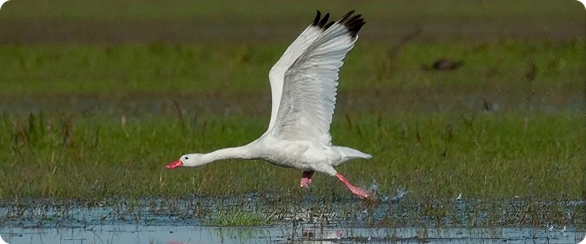

Flora
Vegetación autóctona de Ibicuy y sus humedales
El territorio de Ibicuy está marcado por los cursos de agua, los ambientes ribereños, los humedales y un paisaje donde naturaleza y comunidad conviven.

El paisaje está acompañado por una diversidad de ambientes que permiten la presencia de distintas especies de flora y fauna.

Vegetación autóctona de Ibicuy y sus humedales
El delta del Ibicuy presenta una riquísima variedad botánica adaptada al pulso del agua. En las costas y albardones se desarrollan las características selvas en galería y montes blancos, donde predominan el ceibo (árbol y flor nacional), el sauce criollo, el aliso de río, el timbó y el curupí.
En las zonas bajas y anegadizas prosperan comunidades de juncos, espadañas, totoras y camalotales flotantes. Esta vegetación cumple una función ecológica fundamental: purifica y oxigena las aguas, fija los sedimentos isleños frente a las corrientes y provee refugio y sustento a toda la fauna regional.

Diversidad de especies que habitan sus esteros, ríos y humedales
Los esteros, brazos de río y pastizales de Ibicuy constituyen un hábitat vital para numerosas especies. El carpincho es el gran protagonista de las riberas, conviviendo con coipos (nutrias de río), ciervos de los pantanos (declarados Monumento Natural), lobitos de río y el escurridizo cuis pampeano.
El cielo y los bañados están colmados de más de 200 especies de aves como garzas moras y blancas, chajás, mistos, martines pescadores y cisnes coscoroba. En las aguas confluyen peces nativos de enorme valor biológico y deportivo como el dorado, el surubí, el sábalo, la boga y la tararira.
Los humedales y ambientes naturales forman parte de la identidad del territorio y requieren cuidado y conservación.
